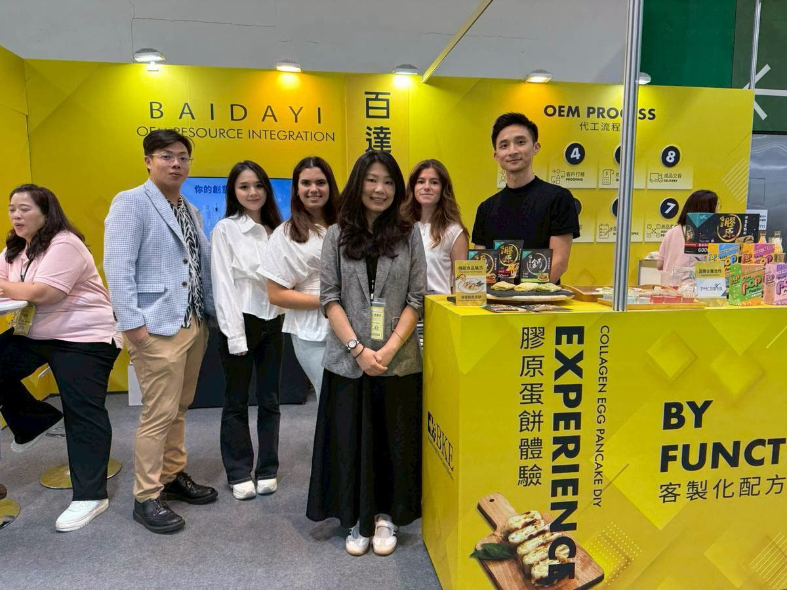

獨家專利原料
以專利配方與原料組合，建立產品在市場上的差異。
ABOUT BAIDAYI
讓生活健康，生命更美麗。百達醫成立於 2008 年，以國家級營養師研發團隊，提供保健食品從配方、劑型、包裝到量產的一站式服務。
OUR BELIEF
從「人」的真正需求出發，提供產品開發的全方位解決辦法，研發製造創新有效的產品，是百達醫自創立以來所堅持的信念。
百達醫企業有限公司（BAIDAYI ENTERPRISE CO., LTD.）成立於西元 2008 年，致力於機能性食品、醫美級保養品、食品植萃添加、日用品的技術研發與配方設計。
製程全程控管在 ISO 22000 國際食品安全管理系統驗證及 HACCP 危害分析重要管制點驗證的規範下，秉持著高品質的生產流程，結合獨特專利配方，研究具有突破性、技術性、有效性的產品，為客戶在市場上搶得先機。
從關懷為出發點，積極研發；藉由多年產學合作，不斷累積生物科技知識的技術與深度，堅持發展具有市場潛力的產品。
提供您最完整的一站式 ODM 及 OEM 代工服務平台。

WHY BKE
透過我們一站式的全面性服務，您除了擁有對保健市場更深厚的認知，更透過我們的知識與技術，創造出絕佳優勢。
以專利配方與原料組合，建立產品在市場上的差異。
依客群、通路與使用情境，選擇最合適的產品形式。
從原料到成品，以品質系統支持每一個開發決定。
協助整理產品訴求與溝通重點，讓好產品說得清楚。
MILESTONES
以穩健的研發與製造基礎，持續擴充劑型、功能配方與服務範圍。
投入機能性食品與保健產品的技術研發與配方設計。
ISO 22000 與 HACCP 危害分析重要管制點驗證。
以多年產學合作持續強化研發能量。
整合研發、製造、包裝與售後，跨足全亞洲。
START A PROJECT
全面性一站式服務，BKE 百達醫提供超乎您想像的價值：保健及保養產品研發、包裝製造、售後服務，助您開創全新商機。
代工諮詢